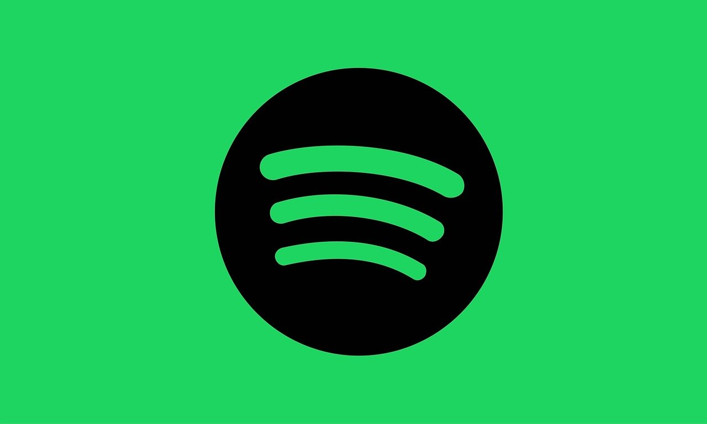

The first part of developing this web application was researching and reading documentation. For this project, since I wanted to work with spotify, my website needed to interact with the Spotify API. The flow chart that can be found at this link Authentication Flow chart is an authentication flow chart that visualsizes the sequence of API calls that need to be made in order to retreive an access token. Access tokens are essentially keys that are exchanged by the backend server for user data.

Spotify Streaming Music: Puppies Chewing by MIH83 at https://pixabay.com/illustrations/spotify-streaming-music-1360002/ (Links to an external site.), CC BY 0.
The second part of developing this web application was writing the actual code. For this project, I wrote the frontend of my website in HTML, CSS, and Javascript which is pretty standard for almost all websites on the modern web. For the backend I used a web framework called Flask which I wrote the code for in Python. The backend of my website handles all the requests and API calls while the frontend provides a method for users to interact with the backend.
{kind=link}